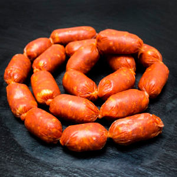

Procesamiento de Carnes

Secundarias
Secundarias
Sobre Nosotros
En la Universidad Nacional Autónoma de Honduras (UNAH), la clase de Procesamientos de Carnes generalmente ofrece una variedad de servicios relacionados con la producción y calidad de productos cárnicos.Estos servicios pueden incluir:
Servicios
Cursos y talleres para estudiantes y profesionales sobre técnicas de procesamiento de carnes, seguridad alimentaria y buenas prácticas.
Evaluación de la calidad de productos cárnicos mediante análisis microbiológicos y químicos para garantizar su seguridad y cumplimiento de normas.
Investigación y desarrollo de nuevos productos cárnicos, incluyendo pruebas de formulaciones y procesos innovadores.
Proyectos de investigación para mejorar las técnicas de procesamiento y conservación de carnes, contribuyendo al avance del conocimiento en el área.